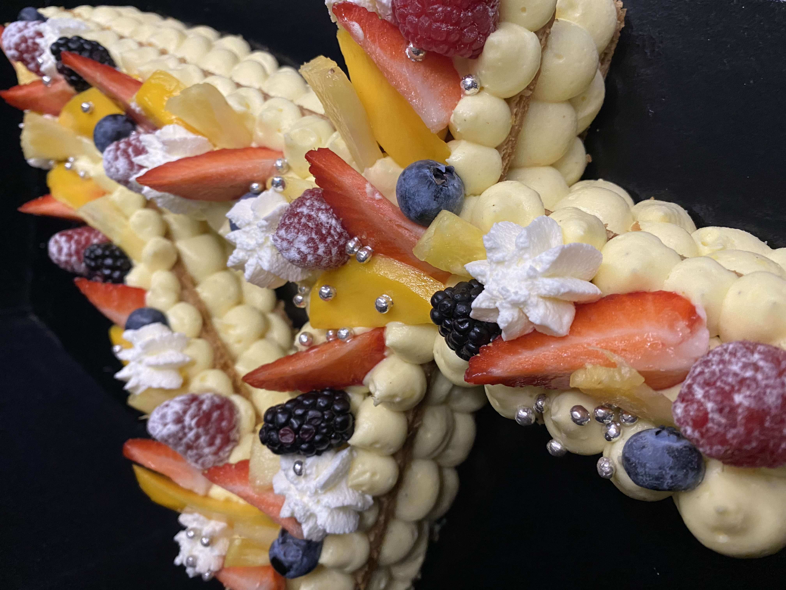
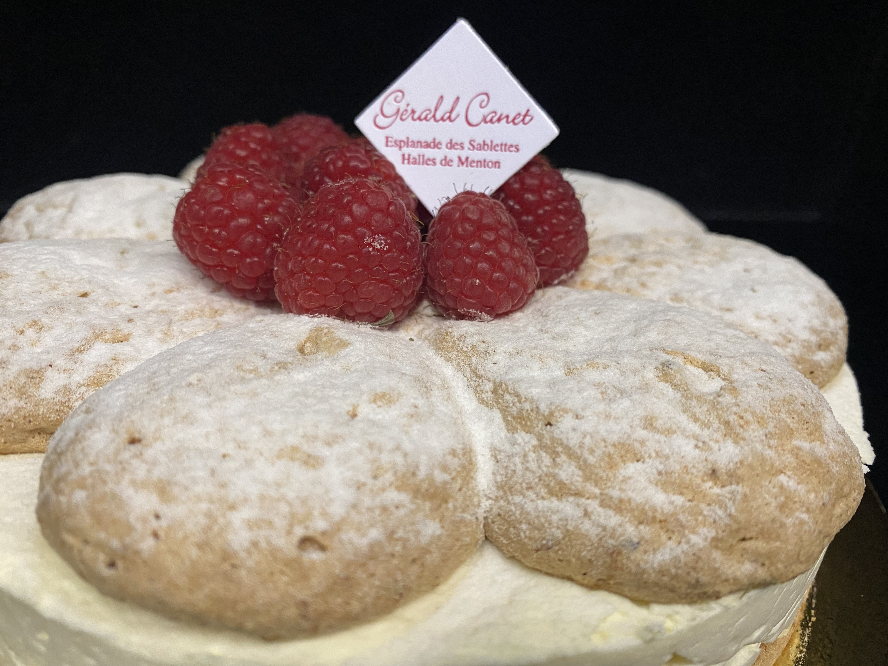
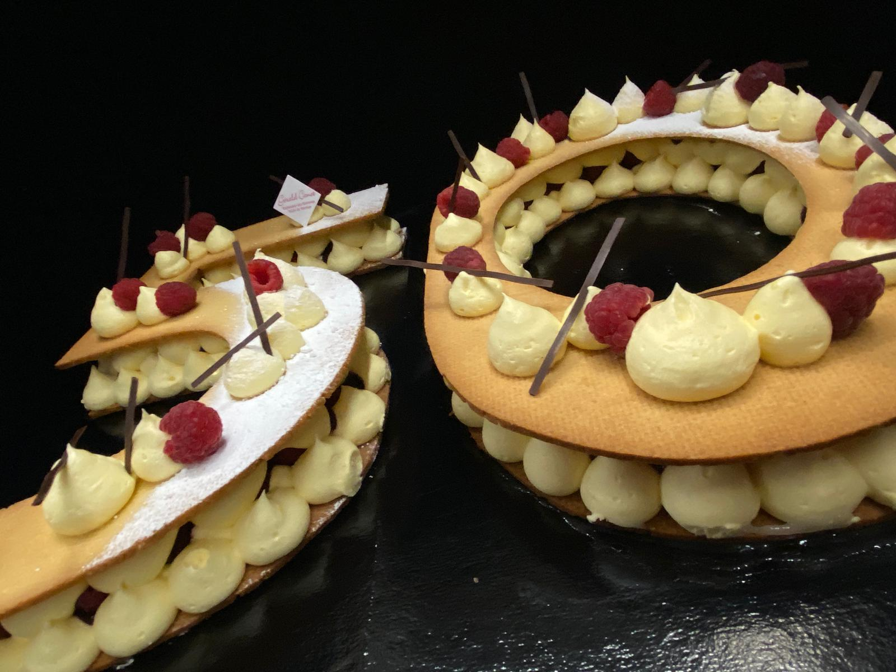
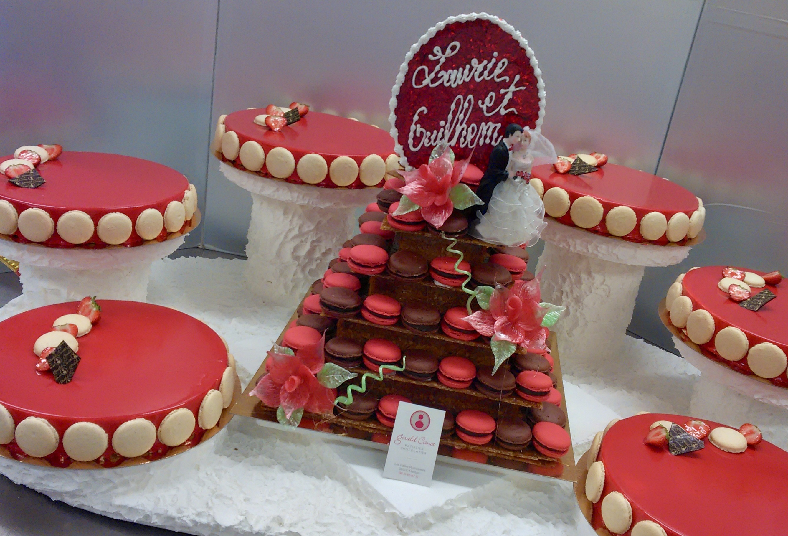

Des créations gourmandes pensées pour être partagées : un équilibre entre élégance, textures et émotions…
du premier regard à la dernière bouchée.
Une gourmandise sur mesure
Entremets, mignardises, pièces cocktails… chaque création s'adapte à votre événement : le nombre d'invités,
l'ambiance, les saveurs que vous aimez, et le style de réception.
L'objectif : surprendre, régaler, et laisser un souvenir qui se raconte.
Entremets
Pour un anniversaire, une fête de famille ou une célébration, l'entremets offre une grande liberté de création :
formes, finitions, jeux de textures, et associations de saveurs.
Classiques revisités ou créations plus modernes… tout est pensé pour un rendu raffiné et une dégustation
parfaitement équilibrée.
Quelques entremets réalisés sur mesure :

Anniversaire : élégance, finesse et gourmandise.

Textures, contrastes, et équilibre des saveurs.

Une signature visuelle, pensée pour votre thème.

Finitions soignées, rendu "wow" au service du goût.
Pièces cocktails & buffets gourmands
Pensées pour être dégustées facilement autour d'un buffet ou lors d'une réception, les pièces cocktails
allient élégance, praticité et gourmandise.
Assortiments sucrés sur mesure, formats individuels, plateaux harmonieux… pour une expérience conviviale
et raffinée.